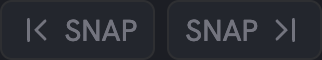

Snap to stanza
Snap to stanza is for hymns and songs, where the current stanza has to sit at the very top of the prompter display and the next one waits below. A press of a page key takes the next stanza to the top with an eased glide, instead of scrolling by a screenful.
What a stanza is
Cadence reads stanzas from the script itself: a run of lines between blank lines is a stanza. A line that only names the stanza (Chorus:, Verse 2, 3., Refrain) belongs to the stanza under it, even if a blank line comes between, and the stanza starts at that line. A cue on a line of its own does not split a stanza. Nothing needs marking up: paste the hymn with its blank lines.
Which lines snap
There is no Snap mode to switch on. A line snaps when its own setting says so, or when its presenter style does:
- In the Speaker Style window each style has a Snap button. A style with Snap on makes every line of that style snap, unless a line has a setting of its own. A "Choir" style for the hymns is the usual use.
- A line's own setting is for one-off cases, such as a hymn led by someone else. Select the lines and, in the Text tab's Snap these lines group, press Snap (they snap), No snap (they never do, whatever their style says) or Automatic (they follow their style again). The same choices are in the Edit menu, the right-click menu and the command palette (⌘K, type Snap). A line keeps its own color and size: only whether it snaps changes.
- With nothing selected the buttons ask Apply to the whole script? and say how many lines it would touch. Snap and No snap then reach only lines with no setting of their own, so a line you set yourself keeps it; Automatic takes every line's own setting away. One undo puts it back.
- The line under the buttons says whether the selected lines snap, or how many lines of the script do.
- A line that does not snap ends a stanza, like a blank line, so text around a hymn is read as it is.
With some lines snapping, PG UP and PG DOWN step one stanza back or forward whenever a stanza's top is within the page the key would scroll. That covers the Stream Deck keys, the phone remote, the keyboard shortcuts and the PG ↑ and PG ↓ items in the menu. Where no stanza is that near, as in ordinary text or between hymns, the key scrolls a screenful as before. The command palette (⌘K) also has Snap to the next stanza and Snap to the previous stanza, which go from stanza to stanza of the lines that snap however far apart they are.
Snap back and Snap next
On the phone remote, Previous stanza and Next stanza buttons appear below the bookmark buttons whenever the script has stops. They work playing or paused, one stanza a tap.
The page keys only take a stanza that is within a page, so after a long stanza one press scrolls a plain page and the next one glides to the stanza. Snap back and Snap next do not ask how far it is: each press glides to the previous or next stanza stop, a long stanza's page stops included, whether the prompter is paused or playing.
- Add them in the Deck pane of the rig editor, from the Bookmarks and Q2Q group (orange on the deck). They are not on the starting layouts, so put them where your hand expects them, next to PG UP and PG DOWN or Rewind and Fast Forward.
- On the top bar they are SNAP with an arrow and a bar, after Jump here (PG ↑ and PG ↓ come before it); they are grey until some line snaps:

- They are also in the command palette (⌘K) as Snap to the next stanza and Snap to the previous stanza, and in the Prompter menu as Snap back and Snap next.
- Like the page keys they are held back by the Double-press guard, one direction at a time: a second Snap next inside the guard's gap does nothing, and Snap back always goes.
- Rewind and Fast Forward are unchanged. Paused they read PG UP and PG DOWN with a double chevron and page, and holding runs on; playing they run on.
A press while a glide is running goes on from where that glide is heading, so a second press a moment later goes a second stanza. Two presses closer together than the Double-press guard (0.3 seconds to begin with, see Edit view and Prompt view) count as one, so a double punch cannot jump two.
A stanza taller than the screen
A stanza too tall for the display gets stops of its own, so each page key shows the next part of it and then goes on to the next stanza. PG UP steps back through the same stops.
- Each stop is a line start. The next one is the latest line that begins no lower than a page on, so the last line you read stays at the top of the next page (one line of overlap).
- A stop has to be at least half a page on, so a line that starts just below the top is passed over for a later one.
- If no line begins there, as in one long wrapped paragraph, the key moves a plain screenful.
- After the last stop the next press goes to the next stanza, and the dimmed Peek of that stanza shows below as usual.
- With stops shown, a dashed stop mark in the margin marks the line where each page begins. Stops inside a very long paragraph have no mark.
Page breaks
The best way to make a long stanza page well is to break it into lines at the sentences. When you set Snap on lines that make a stanza taller than the display, Cadence asks Find the best page breaks? Press Find them to see each line as it would be broken, with a tick on each. You can also press Find page breaks… in the same group at any time.
- Sentence ends, colons, semicolons and ellipses are sure and ticked.
- Commas count only inside a sentence of more than about 30 words; those are a guess and start unticked.
- Dr., Mr., initials and numbered items are not taken for the end of a sentence.
- The line above the buttons says how many lines the script has now and how many it would have.
- Break N lines makes real line breaks that keep each line's style and Snap setting. One undo takes them all back. A line you edited since the review opened is left alone.
The glide
- Forward is how long a turn forward takes, from 0.3 to 5 seconds (3 to begin with).
- Back is one setting for every turn back (0.5 seconds to begin with). Going back is for "let's try that again from the top of the verse".
- Ease start and Ease stop shape the ends of the glide. Ease start on makes it leave slowly; Ease stop on makes it arrive slowly. Both are steep S curves. Ease start is off and Ease stop is on to begin with: it moves off at full speed and settles into place.
A stanza always lands at the top of the display. While the marker rides high (below), the marker is level with its first line.
The marker rides high
While the prompter is playing, the reading line and the marker move up to the top of the display at the first stop of a run, the one marked START, and every stop of the run lands there, so the presenter or choir reads from the top down. The marker glides up with the page, on the same time and curve as the snap.
When the last stop of the run, marked LAST, lands, the marker waits a second, then glides back down to its usual height over two seconds. The page stays where it is, so the marker slides down through the last stanza while it is read, and then you take over scrolling as normal. A run of one stop is labeled LAST only, and the marker stays where it is.
- Pressing Play inside a run, or scrolling into one with the wheel or dial, brings the marker up over one second with the text staying still. Scrolling out of a run sends it back the same way.
- Pausing keeps the marker where it is. Snapping inside a run while paused lands high only when the marker is already up.
- Reading on inside the last stanza does not raise the marker again until you have left the run.
- Your own marker height is the one in the Reading line setting; it is not changed.
- The switch is in the Prompter tab, in the Snap fold: Marker rides high, on to begin with. In Cmd+K, search "rides high".
The look
While the top of the display is in a stanza that snaps, it is at full brightness and the next stanza shows dimmed below it. None, Peek and Full set how much of it you see (invisible, about half, all of it). Under None and Peek stanzas further down are fainter still and stanzas already passed fade; Full dims nothing, ahead or behind.
During a glide forward the stanza that is leaving stays bright until it is near the top edge, then fades quickly. The one arriving brightens as it comes up.
Stop marks
Each place a page key lands is a stop, and Show stops draws a small amber mark for it in the margin beside the line. The marks take no room, so nothing in the text moves, and the text lands at the top of the display exactly as before.
- A solid mark (a chevron and a bar) is a stop that starts a stanza.
- A dashed mark is a stop inside a stanza, one of the page stops of a stanza taller than the display.
- START marks the first stop of a run of snapping stanzas, where the page keys begin.
- LAST marks the last stop of a run: after it, start scrolling again. A run with only one stop shows LAST.
Add stop here
To put a stop exactly where you want it, put the caret in a line and choose Add stop here (Text tab, under Snap these lines; the right-click menu's Snap to stanza; or the STOP HERE key on the deck).
- With the caret inside a line, the line is split there with one single return, and the new line becomes a stop. It shows a dashed mark.
- With the caret at the start of a line, that line becomes a stop. At the end of a line, the next line does.
- With lines selected, each of them becomes a stop.
- Press it again on a stop to take it away.
- In a stanza with stops placed by hand, those stops replace the automatic page stops, whatever the stanza's height.
- A second return makes a blank line, so the stop starts a stanza and shows a solid mark.
Two buttons under Show stops: choose where the marks show: In Editor (the margin of the edit pane) and On Prompter (the prompter picture and the preview). They work separately. A new Cadence starts with In Editor on and On Prompter off, so the talent's screen is clean; a computer that already has its own choices keeps them. The prompter needs the page margin to be wide enough for them; the Normal margins are.
 . A small readout shows the zoom, the real font size and how many lines fit, then goes away.
. A small readout shows the zoom, the real font size and how many lines fit, then goes away. (⌘⌥Enter, or Ctrl+Alt+Enter) takes the prompter to the line your cursor is on. It is on the top bar, after PG ↓, and grey while the editor is following the prompter, because then there is nothing to take. The mirrored window's Prompt view has no editor, so it has no Jump here.
(⌘⌥Enter, or Ctrl+Alt+Enter) takes the prompter to the line your cursor is on. It is on the top bar, after PG ↓, and grey while the editor is following the prompter, because then there is nothing to take. The mirrored window's Prompt view has no editor, so it has no Jump here.